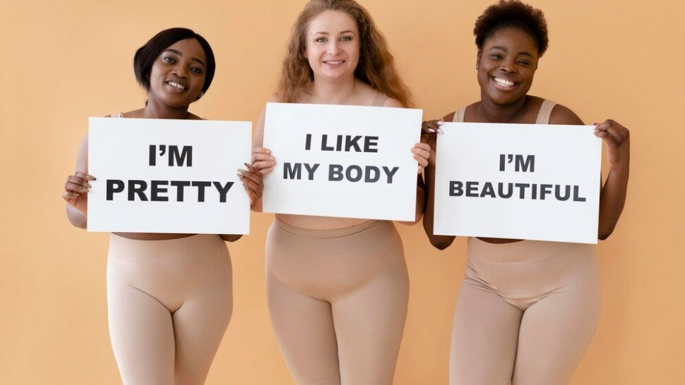

L'obésité et les inégalités de santé : comment les politiques peuvent-elles réduire l'écart ?

L'obésité, définie par l'Organisation mondiale de la santé (OMS) comme une accumulation anormale ou excessive de graisse corporelle pouvant nuire à la santé, est devenue un problème de santé publique majeur au XXIe siècle [1]. Parallèlement, les inégalités de santé, qui se réfèrent aux différences systématiques, évitables et injustes dans l'état de santé entre différents groupes de population, persistent et s'accentuent dans de nombreux pays. La convergence de ces deux phénomènes crée un défi complexe pour les décideurs politiques et les professionnels de santé.
L'importance de ce sujet ne peut être sous-estimée. L'obésité est associée à un risque accru de nombreuses maladies chroniques, telles que les maladies cardiovasculaires, le diabète de type 2 et certains cancers. De plus, elle a des répercussions significatives sur la qualité de vie des individus et sur les systèmes de santé. Les inégalités de santé, quant à elles, remettent en question les principes d'équité et de justice sociale qui sont au cœur de nombreuses sociétés modernes.
Cet article vise à explorer la relation complexe entre l'obésité et les inégalités de santé, en mettant l'accent sur le rôle que les politiques peuvent jouer pour réduire cet écart. Nous examinerons d'abord comment l'obésité agit comme un marqueur des inégalités socio-économiques. Ensuite, nous analyserons les politiques actuelles et leurs limites dans la lutte contre ce problème. Nous proposerons des stratégies politiques pour réduire les inégalités liées à l'obésité, en soulignant l'importance de l'éducation et de la sensibilisation. Enfin, nous explorerons la nécessité d'adopter des approches intersectorielles et de favoriser une collaboration à plusieurs niveaux pour s'attaquer efficacement à ce défi complexe.

Sommaire
L'obésité comme marqueur des inégalités socio-économiques
La prévalence de l'obésité varie considérablement selon les groupes sociaux, reflétant et exacerbant les inégalités socio-économiques existantes. Des études épidémiologiques menées dans divers pays ont systématiquement démontré que les taux d'obésité sont plus élevés parmi les populations à faible revenu et à faible niveau d'éducation [2]. Cette disparité est particulièrement prononcée dans les pays développés, où l'on observe un gradient social inverse en matière d'obésité : plus le statut socio-économique est bas, plus la prévalence de l'obésité est élevée.
Plusieurs facteurs socio-économiques contribuent à cette répartition inégale de l'obésité. Premièrement, l'accès à une alimentation saine et nutritive est souvent limité dans les quartiers défavorisés, où l'on trouve une plus grande concentration de fast-foods et moins de magasins proposant des aliments frais et de qualité. Ce phénomène, connu sous le nom de "déserts alimentaires", contribue à des habitudes alimentaires malsaines parmi les populations à faible revenu.
Deuxièmement, les contraintes financières peuvent influencer les choix alimentaires, les aliments ultra-transformés et riches en calories étant souvent moins chers que les options plus saines. De plus, le manque de temps et de ressources pour préparer des repas équilibrés à domicile peut conduire à une dépendance accrue aux aliments préparés et transformés.
Troisièmement, l'environnement bâti dans les zones défavorisées est souvent moins propice à l'activité physique, avec un manque d'espaces verts, de parcs et d'installations sportives sûres et accessibles. Cette situation, combinée à des préoccupations en matière de sécurité, peut décourager l'exercice régulier et favoriser un mode de vie sédentaire.
L'impact de l'obésité sur la santé et la qualité de vie est considérable. Les personnes obèses sont plus susceptibles de développer des maladies chroniques, ce qui peut entraîner une diminution de la productivité, une augmentation des dépenses de santé et une réduction de l'espérance de vie. Ces conséquences sont particulièrement graves pour les groupes socio-économiques défavorisés, qui disposent souvent de moins de ressources pour faire face aux problèmes de santé et ont un accès plus limité aux soins de qualité.
En outre, la stigmatisation sociale associée à l'obésité peut exacerber les inégalités existantes en affectant les opportunités d'emploi, l'éducation et les interactions sociales. Cette discrimination peut conduire à un cercle vicieux de stress, de dépression et de comportements alimentaires malsains, perpétuant ainsi le cycle de l'obésité et des inégalités de santé.
Les politiques actuelles et leurs limites
L'analyse des politiques existantes de lutte contre l'obésité révèle une approche souvent fragmentée et insuffisamment ciblée pour traiter efficacement les inégalités de santé. De nombreux pays ont mis en place des stratégies nationales visant à promouvoir une alimentation saine et l'activité physique, mais ces initiatives ont généralement une efficacité différentielle selon les groupes sociaux [3].
Les campagnes de sensibilisation du public, par exemple, ont tendance à avoir un impact plus important sur les groupes socio-économiques plus élevés, qui disposent souvent de meilleures ressources et d'un meilleur accès à l'information pour mettre en pratique les recommandations de santé. En revanche, ces campagnes peuvent être moins efficaces auprès des populations défavorisées, qui font face à des obstacles structurels plus importants pour adopter des modes de vie sains.
Les politiques fiscales, telles que les taxes sur les boissons sucrées, ont montré des résultats mitigés. Bien qu'elles puissent réduire la consommation de produits malsains, elles risquent également d'avoir un impact disproportionné sur les ménages à faible revenu si elles ne sont pas accompagnées de mesures compensatoires.
Les réglementations sur l'étiquetage nutritionnel et la restriction de la publicité alimentaire destinée aux enfants sont des pas dans la bonne direction, mais leur impact est limité sans une éducation nutritionnelle adéquate et un environnement alimentaire favorable. De plus, ces politiques ne s'attaquent pas directement aux inégalités structurelles qui sous-tendent les différences de taux d'obésité entre les groupes sociaux.
Une lacune majeure dans les approches actuelles est le manque d'attention portée aux déterminants sociaux de la santé. Les politiques ont tendance à se concentrer sur les comportements individuels plutôt que sur les facteurs environnementaux, économiques et sociaux qui façonnent ces comportements. Cette approche risque de renforcer involontairement la stigmatisation de l'obésité et de négliger les barrières systémiques auxquelles sont confrontées les populations défavorisées.
De plus, la coordination insuffisante entre les différents secteurs gouvernementaux (santé, éducation, urbanisme, agriculture) limite l'efficacité des interventions. Les politiques de santé publique ne peuvent pas être efficaces si elles sont mises en œuvre de manière isolée, sans tenir compte des politiques économiques et sociales plus larges qui influencent les déterminants de l'obésité.
Enfin, le manque de données désagrégées et d'évaluations rigoureuses des interventions existantes entrave la capacité des décideurs à identifier et à reproduire les stratégies les plus efficaces pour réduire les inégalités liées à l'obésité. Il est crucial de combler ces lacunes pour développer des politiques plus équitables et efficaces.
Stratégies politiques pour réduire les inégalités liées à l'obésité
Pour s'attaquer efficacement aux inégalités de santé liées à l'obésité, il est nécessaire d'adopter des stratégies politiques multidimensionnelles et ciblées. Ces stratégies doivent non seulement viser à réduire la prévalence globale de l'obésité, mais aussi à atténuer les disparités entre les différents groupes sociaux.
Premièrement, les politiques de prévention ciblées sont essentielles. Cela implique de développer des interventions spécifiquement conçues pour les populations à haut risque, en tenant compte de leurs besoins particuliers et des obstacles auxquels elles sont confrontées. Par exemple, des programmes de prévention de l'obésité infantile dans les écoles situées dans des quartiers défavorisés pourraient inclure non seulement une éducation nutritionnelle, mais aussi des initiatives pour améliorer l'accès à des aliments sains et des opportunités d'activité physique [4].
Deuxièmement, l'amélioration de l'accès aux soins et au suivi médical est cruciale. Cela peut impliquer le renforcement des services de santé primaires dans les zones défavorisées, la mise en place de programmes de dépistage et de gestion du poids accessibles, et la formation des professionnels de santé pour qu'ils soient plus sensibles aux besoins des populations diverses. Des initiatives telles que les "prescriptions sociales", où les médecins peuvent prescrire des activités communautaires liées à la santé, pourraient être particulièrement bénéfiques pour les groupes à faible revenu.
Troisièmement, des interventions sur l'environnement alimentaire et urbain sont nécessaires pour créer des conditions favorables à un mode de vie sain. Cela peut inclure des politiques de zonage pour limiter la concentration de fast-foods dans les quartiers défavorisés, des incitations pour attirer des supermarchés offrant des aliments frais dans les "déserts alimentaires", et l'amélioration des infrastructures pour promouvoir l'activité physique, comme la création de pistes cyclables et de parcs sécurisés.
Les politiques fiscales peuvent également jouer un rôle important, mais elles doivent être conçues avec soin pour éviter de pénaliser les populations à faible revenu. Par exemple, une combinaison de taxes sur les aliments malsains et de subventions pour les fruits et légumes pourrait encourager des choix alimentaires plus sains tout en atténuant l'impact financier sur les ménages défavorisés.
Enfin, il est crucial d'adopter une approche fondée sur les droits pour lutter contre la discrimination et la stigmatisation liées à l'obésité. Cela peut inclure des lois contre la discrimination basée sur le poids dans l'emploi et l'éducation, ainsi que des campagnes de sensibilisation pour promouvoir une image corporelle positive et combattre les préjugés sociaux.
Le rôle de l'éducation et de la sensibilisation
L'éducation et la sensibilisation jouent un rôle central dans la réduction des inégalités liées à l'obésité. Cependant, pour être efficaces, ces efforts doivent être adaptés aux besoins et aux réalités des différents groupes sociaux.
Les programmes d'éducation nutritionnelle adaptés sont essentiels. Plutôt que d'adopter une approche unique, ces programmes devraient être conçus en tenant compte des contextes culturels, des contraintes économiques et des préférences alimentaires des différentes communautés. Par exemple, des cours de cuisine pratiques qui enseignent comment préparer des repas sains, rapides et abordables pourraient être particulièrement bénéfiques pour les familles à faible revenu. Ces programmes pourraient être intégrés dans les écoles, les centres communautaires et même sur les lieux de travail pour atteindre un large public.
Les campagnes de sensibilisation ciblées sont également cruciales. Plutôt que de se concentrer uniquement sur la diffusion d'informations générales sur la santé, ces campagnes devraient être conçues pour aborder les obstacles spécifiques auxquels sont confrontés les différents groupes. Par exemple, une campagne dans une communauté d'immigrants pourrait se concentrer sur la façon de maintenir des traditions alimentaires culturelles tout en adoptant des choix plus sains. L'utilisation de leaders d'opinion locaux et de pairs éducateurs peut augmenter l'efficacité de ces campagnes en les rendant plus pertinentes et crédibles pour le public cible [5].
L'implication des communautés dans la promotion de la santé est un élément clé pour garantir la durabilité et l'appropriation des initiatives de lutte contre l'obésité. Cela peut prendre la forme de jardins communautaires, de marchés fermiers locaux, ou de programmes de marche en groupe organisés par des associations de quartier. Ces initiatives non seulement favorisent des comportements sains, mais renforcent également le tissu social et l'autonomisation des communautés.
L'éducation des professionnels de santé est également cruciale. Les médecins, infirmières et autres prestataires de soins devraient être formés non seulement aux aspects médicaux de l'obésité, mais aussi aux facteurs sociaux et culturels qui influencent la santé. Cette approche holistique peut améliorer la qualité des soins et réduire les préjugés inconscients qui peuvent affecter le traitement des patients obèses, en particulier ceux issus de milieux défavorisés.
Enfin, l'utilisation des technologies numériques et des médias sociaux peut être un moyen efficace d'atteindre les jeunes et les populations difficiles à joindre. Des
applications mobiles adaptées culturellement et linguistiquement, offrant des conseils nutritionnels personnalisés et un suivi de l'activité physique, pourraient être développées et distribuées gratuitement dans les communautés à risque.
Il est important de noter que ces efforts d'éducation et de sensibilisation ne doivent pas être menés de manière isolée, mais doivent s'inscrire dans le cadre d'une stratégie plus large visant à créer un environnement favorable à la santé. L'éducation seule ne peut pas surmonter les obstacles structurels à une vie saine, mais elle peut donner aux individus et aux communautés les connaissances et les compétences nécessaires pour naviguer dans leur environnement et faire des choix éclairés.
Approches intersectorielles et collaboration multi-niveaux
La complexité des facteurs contribuant aux inégalités de santé liées à l'obésité nécessite une approche intersectorielle et une collaboration à plusieurs niveaux. Aucun secteur ou niveau de gouvernement ne peut, à lui seul, résoudre ce problème multidimensionnel.
La coordination entre les différents secteurs gouvernementaux est cruciale. Les ministères de la santé, de l'éducation, de l'agriculture, de l'urbanisme et des transports doivent travailler en synergie pour créer des politiques cohérentes et complémentaires. Par exemple, les politiques agricoles qui subventionnent la production d'aliments sains peuvent être coordonnées avec les politiques d'éducation qui promeuvent une alimentation équilibrée dans les écoles. De même, les politiques d'urbanisme qui favorisent la création d'espaces verts et de pistes cyclables peuvent être alignées avec les initiatives de santé publique encourageant l'activité physique.
Les partenariats public-privé peuvent jouer un rôle important dans la recherche de solutions innovantes. Les entreprises alimentaires peuvent être incitées à reformuler leurs produits pour les rendre plus sains, tandis que les employeurs peuvent être encouragés à mettre en place des programmes de bien-être sur le lieu de travail. Ces partenariats doivent cependant être soigneusement encadrés pour éviter les conflits d'intérêts et garantir que l'intérêt public reste la priorité.
L'implication des acteurs locaux et communautaires est essentielle pour garantir que les politiques et les interventions sont adaptées aux réalités locales et acceptées par les populations cibles. Les municipalités, les associations de quartier, les écoles et les organisations communautaires devraient être impliquées dans la conception, la mise en œuvre et l'évaluation des initiatives de lutte contre l'obésité. Cette approche ascendante peut favoriser l'innovation locale et l'appropriation des programmes par les communautés.
La collaboration internationale peut également jouer un rôle important, en particulier dans le partage des meilleures pratiques et la coordination des efforts de recherche. Les organisations internationales comme l'OMS peuvent fournir des lignes directrices et un soutien technique aux pays qui cherchent à mettre en place des politiques équitables de lutte contre l'obésité.
Un aspect crucial de cette approche intersectorielle est la nécessité d'une évaluation continue et d'un ajustement des politiques. Des systèmes de surveillance robustes doivent être mis en place pour suivre non seulement les taux d'obésité, mais aussi les indicateurs d'inégalités de santé. Ces données peuvent ensuite être utilisées pour affiner les interventions et s'assurer qu'elles atteignent effectivement les populations les plus vulnérables.
Enfin, il est important de reconnaître que la réduction des inégalités liées à l'obésité s'inscrit dans le cadre plus large de la lutte contre les inégalités sociales et économiques. Des politiques visant à réduire la pauvreté, à améliorer l'éducation et à promouvoir l'équité sociale peuvent avoir des effets indirects mais significatifs sur la prévalence de l'obésité et sa distribution dans la société.
Conclusion
La lutte contre les inégalités de santé liées à l'obésité représente un défi complexe qui nécessite une approche holistique et équitable. Comme nous l'avons vu tout au long de cet article, l'obésité n'est pas simplement le résultat de choix individuels, mais le produit d'un ensemble complexe de facteurs sociaux, économiques et environnementaux qui interagissent de manière inégale selon les groupes sociaux.
Les politiques visant à réduire l'écart des inégalités de santé liées à l'obésité doivent aller au-delà des approches traditionnelles centrées sur l'éducation et la responsabilité individuelle. Elles doivent s'attaquer aux déterminants sociaux de la santé, créer des environnements favorables à une vie saine, et être conçues avec une sensibilité aux besoins et aux réalités des populations les plus vulnérables.
L'importance d'une approche intersectorielle et multi-niveaux ne peut être surestimée. La coordination entre les différents secteurs gouvernementaux, la collaboration avec le secteur privé et l'implication active des communautés sont essentielles pour développer des solutions durables et efficaces.
Les perspectives futures pour réduire l'écart des inégalités de santé liées à l'obésité sont à la fois stimulantes et exigeantes. Les avancées technologiques, telles que l'utilisation du big data et de l'intelligence artificielle, pourraient permettre une personnalisation plus poussée des interventions. Cependant, ces outils doivent être utilisés de manière éthique et équitable pour éviter d'exacerber les inégalités existantes.
En fin de compte, la réduction des inégalités liées à l'obésité n'est pas seulement une question de santé publique, mais aussi de justice sociale. Elle nécessite un engagement politique soutenu, des investissements à long terme et une volonté collective de créer une société plus équitable où chacun a la possibilité de vivre une vie saine, indépendamment de son statut socio-économique.
Alors que nous avançons, il est crucial de maintenir un dialogue ouvert entre les décideurs politiques, les chercheurs, les professionnels de santé et les communautés. Ce n'est qu'en travaillant ensemble, en partageant les connaissances et en restant flexibles dans nos approches que nous pourrons espérer relever ce défi complexe et créer un avenir plus sain et plus équitable pour tous.
Sources
- Organisation mondiale de la Santé. (2021). Obésité et surpoids.
- Loring, B., & Robertson, A. (2014). Obesity and inequities: Guidance for addressing inequities in overweight and obesity. World Health Organization Regional Office for Europe.
- Backholer, K., Beauchamp, A., Ball, K., Turrell, G., Martin, J., Woods, J., & Peeters, A. (2014). A framework for evaluating the impact of obesity prevention strategies on socioeconomic inequalities in weight. American Journal of Public Health, 104(10), e43-e50.
- Bleich, S. N., Vercammen, K. A., Zatz, L. Y., Frelier, J. M., Ebbeling, C. B., & Peeters, A. (2018). Interventions to prevent global childhood overweight and obesity: a systematic review. The Lancet Diabetes & Endocrinology, 6(4), 332-346.
- Kumanyika, S. K. (2019). A framework for increasing equity impact in obesity prevention. American Journal of Public Health, 109(10), 1350-1357